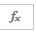

Microsoft Excel 1
Introduction to Editing Spreadsheets
Introduction
About this Class
Welcome to Excel 1! Excel is a program that allows users to create and manipulate spreadsheets, create tables, perform calculations, and chart data. This class will cover the basics and allow you to begin to explore the powerful features of Excel.
Excel is a program that is apart of the Microsoft Office Suite. Every few years, the company releases new versions of the Microsoft Office Suite. This manual is designed from Excel 2013 for the PC. If you are working on a different version of Microsoft Office, you are welcome to try the exercises, but some features may be located in a different location or may not be available.
Prerequisites and Requirements
Navigating the Excel Environment
The Excel Interface from Excel 2010 to Excel 2013 for PC has changed aesthetically, but it has a similar layout. If you are familiar with Excel 2010, there should not be problems for you to adapt to the Excel 2013 layout.
Excel Interface
To begin, open Excel on your computer. If you are having any problems finding Excel, you can use the search bar under the start menu.
The following terms describe the basic features of the Excel environment that we will use today:
-
Worksheet: the Excel workspace is a grid of cells called a worksheet or a spreadsheet
-
Cells: contain data such as numbers, text, or formulas
-
Columns: vertical sections of the cells (up-and-down)
-
Rows: horizontal sections of the cells (right-to-left)
-
Active cell the active cell is the currently selected cell which is indicated by the bold box around it. When commands are performed, they are performed on the current active cell.
-
Name box: displays the unique name for the active cell. Each cell has a unique name containing a letter and a number that refer to which column and row intersect to form the cell
-
Formula bar: location where new data or formulas can be entered to edit the active cell's data, located above the worksheet
-
Worksheet Tabs: additional worksheets that are available for use in the current Excel document
-
View Magnification: allows user to increase or decrease the "zoom" level of the workspace, does not change the actual size of the fonts and images that will print
- v
Scroll bars: allows user to pan to cells that currently aren't visible in the workspace
-
Ribbon, Tabs, and Panels: the bar above the worksheet and formula bar with all available commands, divided into tabs and each tab is divided into panels
-
Help button: links to Microsoft's documentation and troubleshooting resources
Getting Familiar with Excel
-
Click in a few different cells to see the active cell change. Notice how the Name Box (left of the Formula Bar) changes depending on the cell selected.
-
Press the up, down, left, and right arrow keys to move one cell in that direction at a time.
-
Use the scroll bars (the actual bars of the arrows) to move to a different area of the worksheet that is off-screen. Also, you can use the scroll and click-wheel of the mouse.
-
Use the view magnification to try changing the zoom level of the worksheet.
-
Press Ctrl + Home to return to cell A1
When we refer to cells in Excel, they are given a letter and a number (like how A1 is referenced above). The letter (A) describes the column A and the number 1 refers to row 1.
Similarly, when we refer to a set of cells, we use the colon (:) to describe them. For example, if we want to refer to cells A1 to A26, we would describe it as A1:A26. If we want to refer to a box of cells, we would describe them as [upper left cell]:[lower right cell]. So, if we looked at cells A1, A2, A3 B1, B2, and B3; we would refer to them as A1:B3.
Workbooks vs. Worksheets
A single Excel file is called a "workbook" and by default contains three "worksheets". Each worksheet contains a unique workspace where data can be stored and manipulated. Data can be linked between worksheets if desired. All the worksheets within a workbook can be viewed near the bottom of the workbook in an area called the "worksheet tabs".
Inserting and Deleting a Worksheet
-
Click on the small insert worksheet icon.
-
Double-click on the worksheet tab and type in the desired name to rename the worksheet.
-
Right-click on the worksheet tab and select Delete to permanently remove that worksheet.
Entering and Editing Data
In its most basic form, Excel is an interface that allows you to store data in an organized manner. The word "data" is used here in a broad sense; it can apply to any combination of numeric and textual information. In order to use any of Excel's abilities, you must understand how to insert data in an easy to access and logical manner.
Inserting Data into a Cell
For any tool in Excel, there are most likely multiple ways to access it. This may include buttons on the ribbon, keyboard shortcuts, and quick-access buttons within the interface. There is often not a right or wrong way to use Excel's tools and functions and instead it is left up to user preference. You are encouraged to try each exercise in this manual using multiple methods to determine the way that works best for you.
-
Open the Excel1-class-file.xlsx file
There are three different ways to enter or edit data in a cell. Each will be briefly discussed and you can choose the method you like best;
-
Click & Type: The first way to enter data is to click in a cell and simply begin to type.
-
Formula Bar: The second way to enter data is to click in the formula bar. This will activate a blinking cursor and data can be typed in.
-
Double-Click: Lastly, double-clicking in an active cell will activate a blinking cursor to allow you to enter data also.
After the desired data is typed in, the Enter key can be pressed to accept the entry into the cell. Alternatively, you may click the small check-mark button to the left of the formula bar to accept the data as well. If you change your mind about inserting this data, you can instead press the escape key or click the X button next the formula bar to revert the cell to its previous state. Now that these methods have been explored, let’s get started.
Using Formulas and Functions
Excel's main features are its ability to work with mathematical and logical operations to do calculations for you. This allows the user to not only organize data in a spreadsheet but also to perform calculations, in order to create new and more useful data. Excel is a powerful utility that is able to update calculations and formulas as your data changes. We will soon see that this happens quickly and easily without a noticeable delay
Basic Formulas
Excel's calculation abilities are split into two subsets: formulas and functions. A formula is a basic mathematical statement that consist of addition, subtraction, multiplication, and division. These are things you could do on a basic calculator but Excel has the functionality built-in.
The basic operations used for Excel's formulas are:
-
+ : plus sign used for addition
-
- : minus sign used for subtraction
-
* : asterisk used for multiplication
-
/ : forward slash used for division
-
= : equals sign used to start any formula or function
The equals sign is a key part of every formula or function. By putting an "=" as the first character in a cell, Excel enters its calculation mode and treats anything that appears after it as an expression that it can evaluate. It will become second nature for you to automatically put the "=" as the first thing whenever you want Excel to do a calculation for you.
Start Worksheet
-
Open the class files for Excel 1. You can find these files on canvas.
-
Navigate to the Start worksheet tab in the bottom left of Excel.
-
Select cell B3.
-
Type =E3+E4 into the cell and press enter.
You have just successfully entered your first Excel Formula! You should get the sum of E3 and E4 in cell B3. Now let's try a different way of entering a formula
-
Select cell B4
-
Type =
-
Click on cell E3
-
Type *
-
Select cell E4
E3 should now be highlighted while the same thing happens to E4 This can help you visually see what the formula is referencing. As you add more cell references in the same formula, each will be highlighted different color.
-
Press Enter to see the result. It should be the product of cells E3 and E4.
-
Now fill out the rest of the table, cells B5 through B7 using whichever method you find easier.
Basic Functions
Functions can serve the same purpose as formulas but are usually shorter and easier to enter. Functions are built-in calculations that Excel comes packaged with that allow you to execute math & trig functions, logical functions, text manipulation, financial functions, and much more. Here, we will explore the most commonly used and basic functions.
Viewing and Entering Functions
There are three common ways to enter functions that will be reviewed here: typing the complete function in, using the drop-down menu suggestions, and using the insert function library. We're going to enter a SUM function, which adds the integer values of the cells highlighted. Note that this function only works if there are integer values within the cell.
-
Select cell C15
-
Type =SUM( into that cell
-
Highlight cell C11 to C14
-
Press Enter
This is just one of many functions that we can use to have Excel do calculations for us. We will explore the SUM funcion and more throughout the rest of the class.
Date and Time
A common question people have when using Excel is how to work with time and dates. In the next several examples we will go over the basics of working with time in Excel.
-
Select cell B18
-
Type =TODAY() into that cell
-
Notice how the current date is put into cell B18. This is an example of a volatile function, meaning it will update itself whenever a worksheet is opened or changed unless otherwise specified. This can be both good and bad, so be careful when using volatile functions like this.
-
Now lets put in the 1st day of the next month into cell B19. To do this type in the format MM/DD/YYYY.
-
Finally in cell B20 put =B19-B18. Note how this value will change if you open this file tommorow, or a week from now.
Now lets take a look at the next table and do some more work with time.
-
Fill in each of the four cells (A26-B27) with a Time In and Time Out. Notice the formating Excel uses for time. Also note that there needs to be a space between the time and AM/PM.
-
Select cell C26
-
Type =(B26-A26)*24 into that cell. Notice how you need to multiply this value by 24. This is because Excel stores time values as decimal fractions of a 24 hour day. One hour is equal to 1/24th of a day. Thus, to get a whole number you must multiply the value by 24.
-
Do the same thing for cell C27. You have probally also noticed that Excel has automatically formated these cells to time. We will change that in the next step.
-
Select cells (C26-C27)Go to the Home tab -> Number Pannel -> Select the dropdown menu and choose Number. Consequently, you can use this same method to format cells for all sorts of other values such as currency.
Formatting
In cells A29 to C34 we have an unfomatted table. Lets clean it up a bit to make it look nicer.
Select cells A29 through C29.
-
In the Home Tab navigate to the Alignment section and click on the Merge & Center button. This button will take all of the highlighted cells and merge them into one cell and center the input inside the cell.
-
With the same cell selected, go to Home -> Formatting -> and choose the dropdown menu for formated cells. Select Heading 1.
-
Select cells A30 through C34
-
Go to Home -> Styles -> Format as Table -> Select a color scheme that you like
Congratulations! You now know some basics of Excel. Lets put what you learned to the test. In the table below try and replicate what we've done above, creating your own table with an Item, the Date it was sold, and the Price. Then calculate the total. Feel free to play around with values and formatting and be curious! Below is a picture for reference.
Budget Worksheet
-
Select the Budget worksheet in the Worksheet tab
-
Select cell B18
-
Type =SUM(into that cell
-
Highlight cell B3 to B11
-
Press Enter

-
Navigate to cell K7 and type =SU
A drop down menu will appear with all the functions in Excel's library that start with the letter "S". When a function is selected, a brief description of what the function does is provided.
-
Find the SUM function
-
Double click it to select it
-
Select cells K4:K6
-
Press Enter
-
There should be a small green triangle in the top left corner of cell K7. We will address this later in the manual.
Now we are going to enter a function using the Insert Function button

-
Select cell K16 and click the Insert Function button.
A window will appear and allows you to search for any given function in Excel's complete function library. After a function is selected, it brings up a function arguments window that prompts for the necessary information.
-
Type "maximum" in the search for a function field at the top of the window
-
Click Go to search
-
Select MAX from the search results
-
Click OK
The MAX function reports the largest number from the select range
-
Delete the content in the Number1 field
-
Select cells B3:H11 in the workspace (move the Insert Function dialog box to the side if you can’t see the cells you need to select)
-
Click OK
-
Now try any of the different ways to enter a function that you just learned to fill out cells K17 (minimum) and K18 (average), Using the same range for cells B3:H11 (K17 should be $9.54 and K18 should be $16.81). If you want a to add a dificulty see try and tweak the range to calculate the expenses of just one month.
The minimum function reports the smallest number from the selected range and the average function reports the sum of the selected range divided by the number of cells in that range.
Entering Functions Using Auto-fill
AutoFill is a convenient feature that allows you to repeat a common formula multiple times without having to type it in again and again.
-
Select cell B18
-
Place your mouse over the dark green square in the bottom right corner of the active cell.
-
Once you see the black cross icon (changed from the white cross icon), click and drag the selection across to cell H18
-
Release the mouse.
Notice how the function has been copied into the selected cells. This function also works for the formulas we mentioned previously. What we just did was a shortcut for a copy-and-paste operation. If you inspect the entries we filled into cells H5:H9 you will notice that we didn't copy the exact formula from cell H4. Instead, each different formula contains a reference to two cells in the same row. This is because the cells in the formulas are relatively addressed to the cells in column H, not by their absolute location. We will discuss the issues of relative versus absolute referencing later.
Absolute Cell Functions
Up to this point, we have been using relative cell addresses to reference cells. This allowed us to use AutoFill in order to create the same formula for different data points. Now we will focus on absolute cell references. Absolute references are good when you need to reference the same cell from multiple locations, something that is not possible when using relative cell addressing. Let's try an example using relative cell addressing and see why we need to learn absolute.
Calculating Amount in Bank (per month)
-
In cell C20, type =(B20+B19-B18)*(1 + K20). This represents the amount you had at the start of last month plus your income minus your expense times the bank's intrest. From here, we can use the AutoFill, same as above, to fill in the cells horizontally.
-
Click on cell D20. You will notice that cell K20 has become cell K21.
-
Click on cell C20
-
Type $'s around the K.
-
Your function should look like this.
= (B20+B19-B18)*(1 + $K$20)
The $'s are used to declare the absolute cell functions. A $ behind the alphabet letter signifies you wish to keep the references within the K column, and a $ behind the numerical value signifies that you wish to keep the reference within the 20 column. Now drag the function to cell H20 and notice that cell K20 stays constant.
Understanding Functions
It is easy to copy and paste functions, but being able to write them on your own will help you in the long run. The first step towards being able to write your own function is being able to understand them and what they are telling Excel to do. Let’s start with a basic IF function:
=IF(logical_test_value,value_if_true,value_if_false)
We can break down this function into several parts:
-
=IF: This tells Excel that you want to carry out the IF function
-
logical_test_value: This is the condition that you want to check. For instance, if you want to make sure that cell A1 is less than or equal to 7, you would replace this with A1
<=7.
-
value_if_true: This controls what will appear or occur if the logical test is true
-
value_if_false: This controls what will appear or occur if the logical test is false
Calculating if you are going to England
-
Click on cell K11, for 'Saved', and enter in the value of H20
-
Now, to calculate 'Need', in cell K12 type = K10-K11
Now we will see how the IF function in K13 works in our budget sheet.
=IF(K11>=K10,"YES!","NO!")
-
This function is telling Excel the following
-
If the value in K11 is greater than or equal to the value in K10, express "YES!". If the value in K11 is NOT greater than or equal to the value in K10, then express "NO!".
-
It is possible to put mathematical equations, other functions, and text as these values. Only the logical_test_value cannot have text written in it. Also note that any written text has to be placed in quotation ("") marks.
Note that not all functions follow this exact format. This is just used as a common example that you may encounter as you use Excel.
Basic Charts
Occasionally, you may also want to look at your data in the form of a graph or a chart. Excel offers several different types of graphs and charts for you to interpret your data.
Creating Charts (Including Styles and Moving)
Let's create a graph using the data from the Budget worksheet.
-
Select the data from B20 horizontally to H20.
-
Go to the Insert tab -> Charts -> Recommened Charts
-
Select Line Chart.
A line chart will appear on-screen. Notice that the Y axis is the data that we selected earlier. The X axis, as we will name in a bit, are the months of the year. Now, let’s edit the chart title.
-
Double Click to select “Chart Title” and rename it "Money in the Bank".
-
Select the graph and go to the Chart Design tab and select "Select Data" in the data pannel.
-
On the right side of the window, press the Edit button below Horizontal (Category) Axis Labels.
-
Highlight cells B2 to H2 horizontally. This is the range that you would like to name your axis with. Since these are bank statements, it would make sense to use the names of the months.
Editing Axis
You will probably notice that a lot of the chart elements can be edited by simply double-clicking the point of interest and using the sidebar to fine tune your element.
-
Select Add Chart Element in the Chart Layouts panel within the Design Tab.
-
From the drop down menu, select Axis Title and choose Primary Horizontal.
-
Repeat steps 1 and 2 to choose Primary Vertical.
-
Double click the horizontal axis title and type "Time (in months)"
-
Do the same for the vertical axis title and type "Money Accumulated"
-
Another useful thing to be able to do in Excel is to adjust the minimum and the maximum values of the axis. Although this is not important to do for this graph we will show you how to do it for future refernce.
-
Double-click the left axis and make sure it is highlighted. A panel should appear on the right. Select the Axis Options button.
-
Select the drop down arrow to the left of Axis Options
-
Change the minimum and maximum bounds to make the graph look nice. Changes in the minimum and maximum units will change the amount of space between each horizontal line.
-
Lastly, notice how many additional tools there are to customize your graphs. We won't go over all of them but feel free to play around with them on your own time.
Pie Graph
-
Now that we know how to make a line graph lets make a Pie Graph. Select cells B3:B11.
-
Select the Insert Tab and click on the pie/doughnut.
-
Click 2D Pie
-
Now let's try labelling the X axis properly. In the same manner as with the line chart select the graph and go to the Chart Design Tab on the top and hit "Select Data" in the data pannel.
-
Click on Edit Horizontal Categoy Axis Labels and Select cells A3:A11.
Editing Source Data
This is especially helpful if you would like more than one line of data on a chart. For our exercises, we will walk through it, but we will not implement it.
-
Select your chart by clicking on it.
-
Click on the Design Tab underneath Chart Tools.
-
Within the Design Tab, you can click on Select Data from the Data panel. A window should appear on-screen.
-
On the left side, you have several options to select your data.
-
Select Edit and then another window should pop up. From there, you can highlight your data.
Chart Aesthetics
Now that the charts are formatted the way we like them. Let's make them aesthetically appealing. This will be especially useful for charts that have a lot of data points or have a lot to present.
Editing the Chart Style and Layout
-
Select the chart you want to edit (either chart will do).
-
On the right-hand side, there should be three chart buttons.
-
Chart Elements: Adds several chart elements, such as title and axis labels
-
Chart Styles: Changes the color scheme and style of the selected chart
-
Chart Filters: Edits which data points or names are visible on the chart
-
Click Chart Styles
-
Choose a fantastic chart style and color scheme
Editing the Legend
-
Double click the legend on the June Spending pie chart and a right-hand panel should show on screen if it isn't already.
-
Select the Legend Options button.
-
Change the Legend Position by selecting the Right option. The legend should appear on the right side.
-
Select the Fill & Line button.
-
Change the Border to Solid Line.
-
Change the color by selecting the drop down paint bucket icon.
Displaying Values on the Chart
-
Select the June Spending pie chart.
-
From the chart buttons, choose the Chart Elements button.
-
Select Data Labels.
-
Select the Data Labels on the chart.
-
Select the Label Options in the right hand sidebar.
-
Change the position of the Data Labels to Below.
Moving Charts
Let’s say that we want to move this chart to a new worksheet for further analysis or to share it with others without our data. We can do that as well.
-
Select the June Spending Chart and navigate to the Design Tab.
-
On the right side, locate the Move Chart button in the Location panel.
-
Select Move Chart. You have two options to choose from. You can either place an object in a different worksheet (Object in:) or make a new worksheet altogether (New Sheet:).
-
Click on New Sheet:
-
Name it "June Spending".
Viewing, Sorting, & Filtering Data
With Excel capable of holding millions of pieces of data, it can become overwhelming to use its features without having knowledge of its viewing and sorting options. Viewing an overwhelming data set can become manageable and efficient by utilizing a few of Excel's simple features.
Freezing Panes
You will notice that as you scroll down the spreadsheet, you lose the column headings at the top of the worksheet (Store Name, Item Cost, etc.). These would be helpful references if you are viewing an item at the bottom of the list but unfortunately, since our list is so large, it isn't possible to view them. Freezing panes is a solution to this problem
-
Click in cell A1
-
Select the View Tab
-
Select the Freeze Panes button from the Window panel
-
Click Freeze Panes
This "freezes" everything above the active cell A3; so now, when we scroll down the worksheet, all of our column headings remain at the top of our screen. To unfreeze the panes, select the Freeze Panes button from the Window panel again and click Unfreeze Panes.
Filtering Data
Sorting is useful but can be a little inconvenient if you just need quick looks at data in a certain way. Filters can be applied to our data to make it easier to view specific categories of information. A filter shows only the information that we ask for and hides the other data. Let's explore a few Filter options with our class list.
-
Select cells A1:G1.
-
From the Data Tab, click the Filter button. You should now see small arrow in each column header. Clicking on these arrows will open a filter menu for that header.
-
Click on the drop-down arrow for "Semester"
-
Uncheck Select All.
-
Then select Fall
-
Click OK.
You should now only see all of the classes offered in the Fall semester. Note that all of your data is still present, but it is currently hidden.
-
To see everything again, click Select All on the Category filter menu
-
Click OK.
A variety of filters can be applied to your data depending on your needs or desires. We can also filter our data based on specific criteria applied a column or in an alphabetical or numerical order. Take a few moments to explore some options or ask your instructor for more information.
-
To remove all filters, click the Filter button in the Data Tab.
Sorting Data
Often times you will have a large amount of data and you will want to sort it in some logical way (alphabetically, numerically, etc.). We can sort our data in multiple levels by using the Sort feature.
-
Select cells A1:G47 (for all class titles and descriptions)
-
On the Data Tab, click the Sort button.
-
Check the option "My data has headers" box in the "Sort" dialog box that appears. This allows us to user our header names as the sort options.
-
Under the “Column: Sort by” menu choose Semester.
-
Under the “Sort On” menu choose Values
-
Under the “Order” menu choose A to Z.
-
Click OK
We have organized our data alphabetically by Department. We can add as many levels of sorting as desired.
-
Try to add another level of sorting, such as by Credit from Largest to Smallest.
Saving
From the File tab you can save, print, and open workbooks. You can also access special options such as add-ins and customizing your ribbons.
Saving Workbooks
-
To save your workbook, click the File Tab
-
Click Save As to save your workbook as new, unique file
-
Under the "Save as type", select "Excel Workbook".
-
Click Save
Closing Excel
-
Select the File Tab (backstage view)
-
Save your workbook
-
Exit Excel by selecting the Exit button at the bottom of the left-side menu
For Excel support and more information visit support.office.com/en-us/excel. Thank you for attending Excel 1. We look forward to seeing you in Excel 2: Functions, Excel 2: Analysis, Excel 2: Data Visualization, and many other Software Training for Students classes in addition to our Ask a Trainer sessions. All of these services can be accessed at our website, wisc.edu/sts.